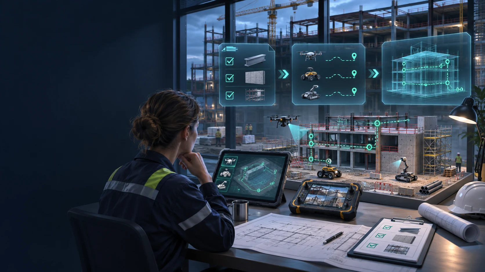
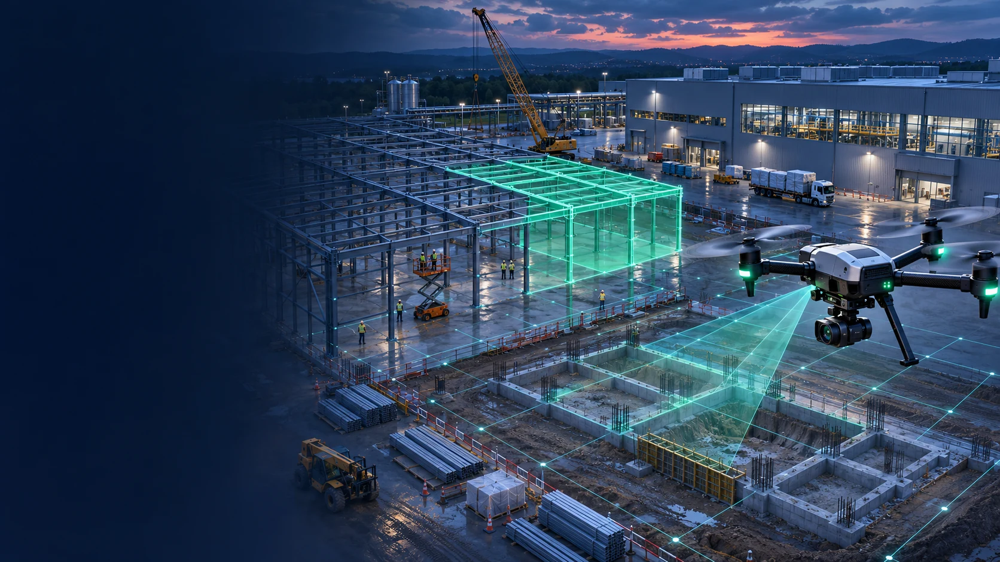
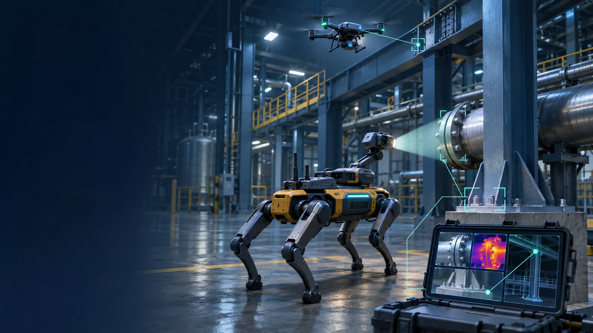
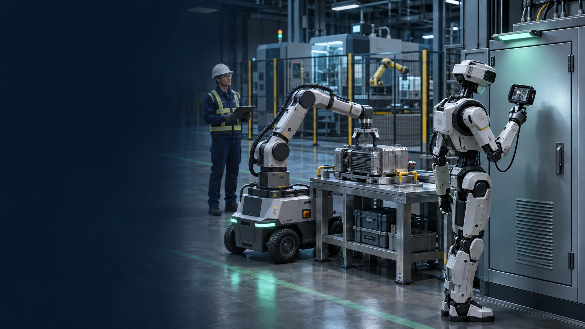
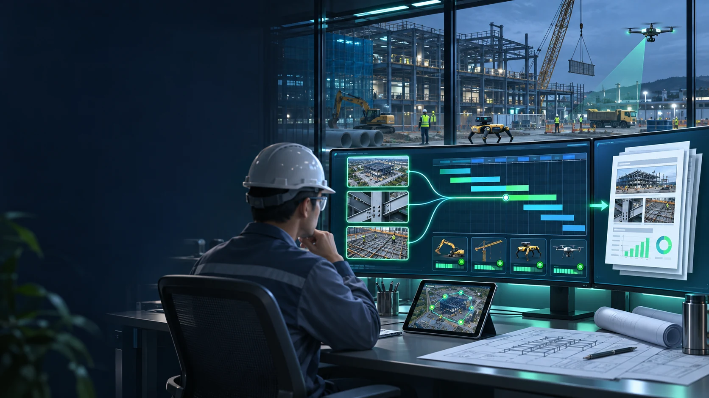

01 / Mission planning
Turn owner requirements into inspection missions.
Start with what must be checked, where and how often. We translate your requirements into a structured inspection plan and a practical first integration.
- ✓
A requirements baseline. Connect contractual obligations, inspection criteria and operating procedures to assets, locations and responsible teams.
- ✓
A defined mission. Specify the route, observation, sensor, inspection interval and evidence needed to assess each selected requirement.
- ✓
The right starting scope. Assess available robots, interfaces and site conditions; choose a bounded construction or operating-plant workflow.
- ✓
Measurable acceptance. Agree coverage, evidence quality and review criteria so your team can evaluate the pilot against a clear baseline.
01 / 06 Mission planningSCROLL TO EXPLORE ↓Illustrative robotics integration
02 / Connected robotics
Different robots. One coordinated workflow.
We propose an AI integration layer linking selected robotic platforms, their observations and your engineering systems. Each platform has a defined role.
- ✓
Drones for the wider view. Capture accessible roofs, structures and construction areas; connect aerial observations to the site model and inspection plan.
- ✓
Quadrupeds for ground inspection. Collect repeatable observations along suitable routes, including equipment readings, images and thermal data where supported.
- ✓
Humanoids and manipulators. Integrate selected inspection and assistance tasks after assessing the platform, tools and conditions at your site.
- ✓
Shared mission records. Coordinate assignments and mission status through available interfaces, with operator supervision and agreed operating boundaries.
02 / 06 Connected roboticsSCROLL TO EXPLORE ↓Illustrative robotics integration

03 / Construction overview
See how the site is progressing.
Build a repeatable visual record of construction. Connect observed work to locations, contractors and work packages so the owner can follow delivery.
- ✓
Scheduled site surveys. Plan recurring aerial and ground observations, with capture dates, locations and known coverage gaps.
- ✓
Progress against the plan. Compare observations with approved drawings, models and the agreed work breakdown where suitable reference data exists.
- ✓
Contractor work visibility. Link observed activities and potential deviations to the responsible contractor, area and work package for review.
- ✓
A consistent site overview. Assemble progress imagery, changes and open questions into a shared view; distinguish observed work from accepted completion.
03 / 06 Construction overviewSCROLL TO EXPLORE ↓Illustrative robotics integration

04 / Requirements & evidence
Connect every finding to what was required.
AI-assisted checks relate robotic observations to agreed criteria. Engineers receive a reviewable finding with the evidence and context behind it.
- ✓
Requirement-based checks. Compare selected observations with inspection rules, technical criteria and the applicable approved document revision.
- ✓
Evidence you can revisit. Retain images and readings with timestamps, equipment identifiers, location and the mission that produced them.
- ✓
Clear review status. Separate potential deviations, items needing review and insufficient evidence; a missed observation is never treated as a pass.
- ✓
Action and closure. Assign findings to responsible staff, track responses and re-inspections, and retain authorized acceptance decisions.
04 / 06 Requirements & evidenceSCROLL TO EXPLORE ↓Illustrative robotics integration

05 / Operating facilities
Inspect on time. Act on what you find.
Bring connected robotics into an existing facility. Link recurring inspections to asset information and the maintenance team’s established workflow.
- ✓
Recurring inspection plans. Schedule agreed routes and checks against asset requirements; flag overdue, failed or incomplete missions.
- ✓
Changes worth investigating. Compare available readings and imagery over time to highlight potential deterioration for qualified assessment.
- ✓
Maintenance and replacement needs. Route findings to responsible staff and connected maintenance systems, with evidence for work-order and replacement decisions.
- ✓
Selected robotic assistance. Evaluate physical maintenance tasks separately; execution depends on suitable robots, validated procedures and site authorization.
05 / 06 Operating facilitiesSCROLL TO EXPLORE ↓Illustrative robotics integration

06 / Reports & schedules
Turn field observations into coordinated action.
Connect construction and operating evidence to the systems where work is planned and decisions are recorded. Keep the source behind each reported status.
- ✓
Automated report preparation. Compile mission results, inspection coverage, flagged findings and supporting imagery into structured review reports.
- ✓
Oracle Primavera connections. Map agreed observations and work packages to activity IDs; prepare proposed progress updates for planner review.
- ✓
Connected follow-up. Link responsible contractors, due dates and maintenance actions to existing project or asset-management workflows.
- ✓
An accountable record. Preserve observations, review decisions and action closure; keep approved schedule updates distinct from AI-generated estimates.
06 / 06 Reports & schedulesSCROLL TO EXPLORE ↓Illustrative robotics integration